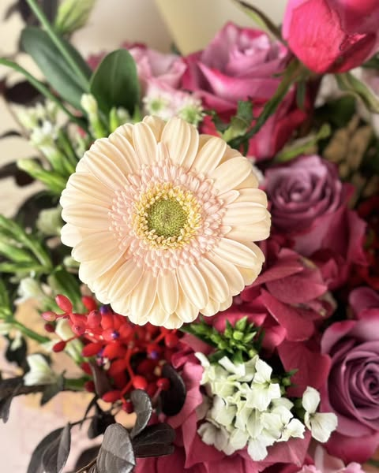

永生花的由來有一個感人至深的美麗故事。
有一對深愛的情侶即將分離。男孩必須參加家鄉戰爭，保衛自己的家人。這次的告別也許是永別。男孩留下了剛摘下的玫瑰和用紅蠟封好的信給女孩。他告訴女孩：當這束玫瑰最後一片花瓣掉落時，就代表她已經忘記了他，開始了自己全新的生活。
女孩把玫瑰放在花瓶裡，雙手合十向上帝祈禱
戰爭的血腥消息不斷傳來，那些玫瑰花慢慢失去了露水、失去了鮮艷，連香氣也變得淡了，但男孩的消息卻一直沒有。奇跡般的是，花瓶裡的花朵從未掉下一片花瓣。最終，在一個清晨，身披凱旋之衣，身上布滿傷痕的男孩回到了女孩的家門口。從此，他們牽手走過一生，再沒有分開過。而那束乾枯但依然挺立的玫瑰花也在那裡。這對被幸運之神眷顧的愛人的故事流傳開來。在歐洲，只要男孩和女孩相愛，就會留下一束玫瑰，或把花瓣放在聖經裡，或製成永不凋謝的永生花。以此祈禱能夠像故事中的他們一樣幸福和幸運，直至永恆。這也是永生花的花語和寓意。
能夠保持美麗花姿3年以上的永生花，象徵著「永遠不變的愛情」、「永恆幸福」、「美麗長存」。情人節送女生永生花，不僅是表達愛意，還承諾「相伴一生」。